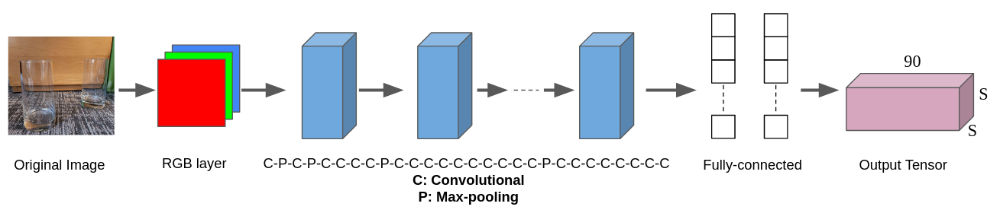

Milestone I
For our first milestone, we wanted to explore different methods for implementing speech-to-text and object identification.
Voice Commands
For milestone 1, we tested two ways of converting audio to text: Google Speech-to-Text through the SpeechRecognition python library, and OpenAI Whisper. We were able to get both methods working, but we were only able to get OpenAI Whisper to work on prerecorded audio files, while the SpeechRecognition library could transcribe live. Moving forward we will use the SpeechRecognition library for speech-to-text.
Since we plan on using speech-to-text to control our robot assistant, we tested the library's effectiveness in continuous live speech recognition. We adjusted theRecognizer() class using the
adjust_for_ambient_noise() function to filter out noise, and
set the pause_threshold attribute to 1 so it would output
recognized words after 1 second of hearing nothing. We found that parsing
the list of recognized words for keywords is an effective way of activating commands.
Our assistant also needed to audibly communicate that a command was received
to improve the user experience. Using the
pyttsx3 python library
we received audible confirmation that a keyword was detected and a command
activated.
Object Identification
After researching multiple object identification methods, we settled on using Ultralytic's YOLO v8 library. The library had models that were pre-trained using the COCO dataset, which includes 80 different daily life objects. For milestone 1, we wrote a Python script that can identify the following objects using bounding boxes.
- Bottle
- Cup
- Mouse
- Cell phone
- Book
- Scissors

What is YOLO?
YOLO is a high-performance detection method that significantly outperforms other methods like detection methods such as HOG (Histogram of Gradients), RCNN, or CNN. YOLO v1, released in 2016, processed 45 frames per second on a Titan X GPU. YOLO locates and classifies an object at the same time in a one-step process, hence the name 'You Only Look Once.'
The description below is based on the structure of YOLO v1. This program uses the latest YOLO v8, but the governing concepts behind them are similar.
YOLO divides a given image into a S x S grid, represented with the yellow lines in the image below. The red boxes are objects identified by the algorithm.
Fig 1. Example of applying YOLO on an image
Each grid cell is represented as a multidimensional vector. The first 5 values are \([x_1,y_1,w_1,h_1,c_1]\), where \((x_1,y_1), w_1, h_1\) are the position, width, and height of the bounding box, and \(c_1\) is the confidence level (0~1). The next 5 values are \([x_2,y_2,w_2,h_2,c_2]\), as each grid cell can handle up to 2 bounding boxes. The remaining values are \([p_1...p_80]\) where each value represents what object the box belongs to in the train dataset. This example uses the COCO dataset, which has 80 objects. For example, if the 3rd object in the dataset was a person, the values would look like \([0,0,1,....0]\). The final output of the neural network ends up being a S x S x 90 tensor. Compared to neural networks of RCNN-type algorithms, YOLO's neural network is much simpler. As shown below, YOLO's neural network consists of 24 convolutional layers, 4 max-pooling layers, and 2 fully-connected layers.
Fig 2: YOLO's neural network structure